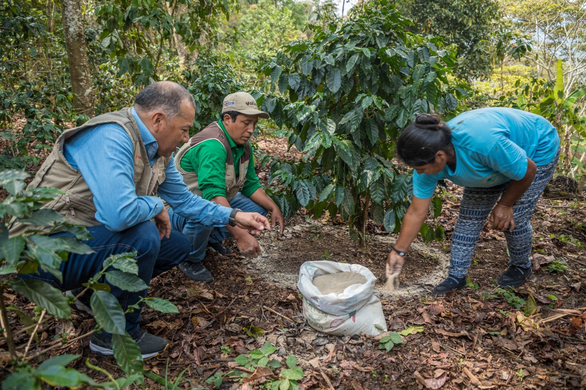

Nuestra Historia
Desde 1999, Café Sello Rojo ha sido el reflejo de una tradición cafetera llena de pasión y entrega. Fundado en Buenaventura, nuestro compromiso siempre ha sido brindar una taza de café con el mejor sabor, aroma y calidad que represente la calidez del Pacífico colombiano.
Creemos en el trabajo honesto, el respeto por nuestras raíces y en compartir cada logro con quienes nos han acompañado en este viaje.
"Apasionados por el café" es más que un lema; es nuestra forma de vivir y trabajar cada día.
Conoce a nuestro equipo
Frases que nos inspiran
“El aroma del café es el eco de nuestra dedicación.”
“Cada taza cuenta una historia, la nuestra.”
“Pasión, aroma y tradición en cada sorbo.”